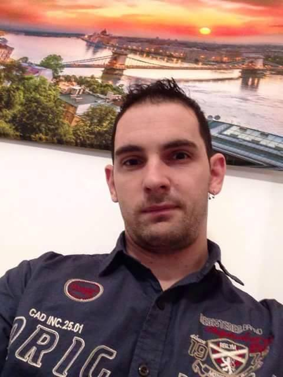

"Amit csinálsz, csináld meg a legjobban. Legalábbis próbálkozz. Minden dolognak van optimuma, "csak" elő kell bányászni." -Kukorelly Endre

Szakmai munkámban - ahogy egész életemben is - a következő cél vezérelte: a tökéletesség.
Büszke vagyok profi munkámra, kreatív javaslataimra és az ügyfeleimmel való jó kapcsolatra.
Formába öntöm ötleteidet és megvalósítom gondolataid.
Remélem elnyerem bizalmadat és megbízóim között üdvözölhetlek. Fontos megemlítenem, hogy munkáimat nem adom tovább alvállalkozóknak, ezért a legmagasabb szintű munkaminőségre számíthatsz tőlem!
Tevékenyési köreim közé tartoznak az alábbi szolgáltatások, melyek profi munkavégzést, korrekt árakat, garanciát foglal magába:
-Normál, diagonál fal és padló hidegburkolás
-Lépcső és lábazat burkolás
-Vízzáró szigetelés készítés
-Zuhanytálca és kádfalazás
-Bontás
-Terméskő burkolás
-Terméskő fugázás
-Laminált padló lerakása (szegőléccel)
-Szőnyegpadló lerakása (ragasztva, szegéllyel)
-PVC lerakása
És ha esetleg valamit kihagytam, telefonon rendelkezdésre állok, hogy megválaszoljam felmerülő kérdéseid :)
Burkolási áraimat megtalálod az árak menüpont alatt.
Elérhetőségeim pedig az oldal alján.